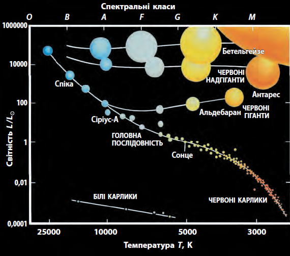

Сонце – найближча до нас зоря
Стара, спокійна, маленька жовта зірочка, яка відноситься до спектрального класу G2. Це коли його порівнювати з іншими зорями.
Вона показує місце Сонця в системі зір. Деякі зорі тільки-що народилися, інші мають середній вік. Крім того, багато зір закінчують своє існування грандіозними спалахами. Знаходиться Сонце у спіральній галактиці Чумацький Шлях, в одному з її рукавів, який називають рукавом Оріона. Його вік приблизно 4,5 млрд. років.
В космосі астрономи не знайшли хоча б дві однакові зорі, які мають однакові фізичні параметри — масу, температуру, світність, радіус [2], тому порівняємо Сонце з Землею.
Температура на її поверхні - 6 0000 С, а в ядрі – до 15 млн. град. С.
Порівняємо масу Сонця та Землі. Коли б можна було на одну шальку терезів покласти Сонце, то на іншу довелося б помістити 330 тисяч таких планет, як Земля.
Сонце здається нам маленьким лише тому, що знаходиться дуже далеко від Землі, на відстані майже 150 мільйонів кілометрів. Цю відстань прийнято за астрономічну одиницю (1 а. о.). Воно є центром однойменної системи, 99 відсотків маси всієї Сонячної системи зосереджено у Сонці [2].
